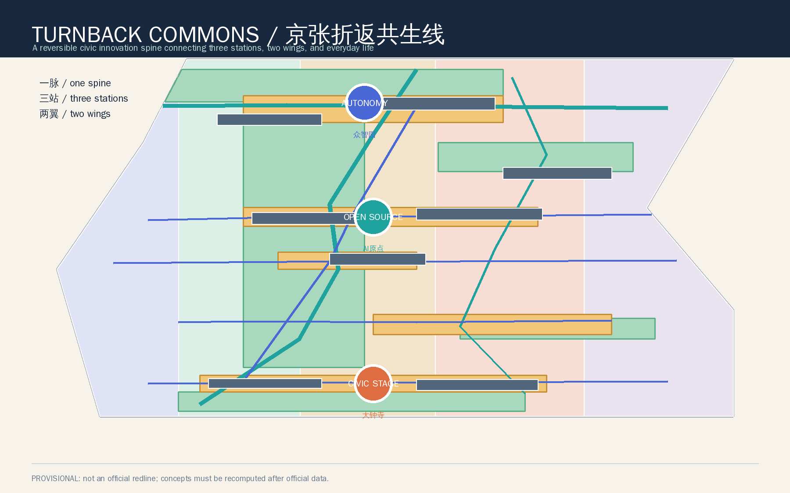
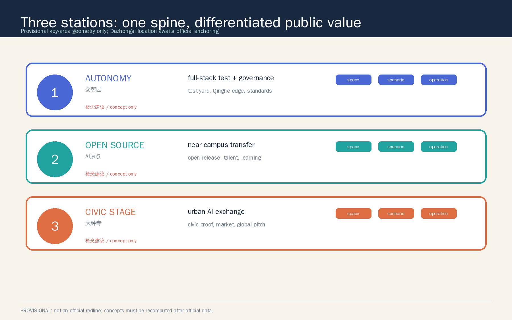
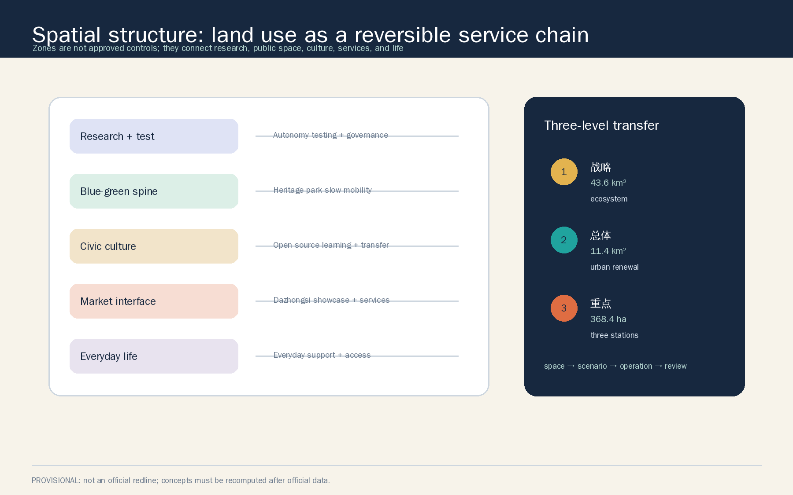
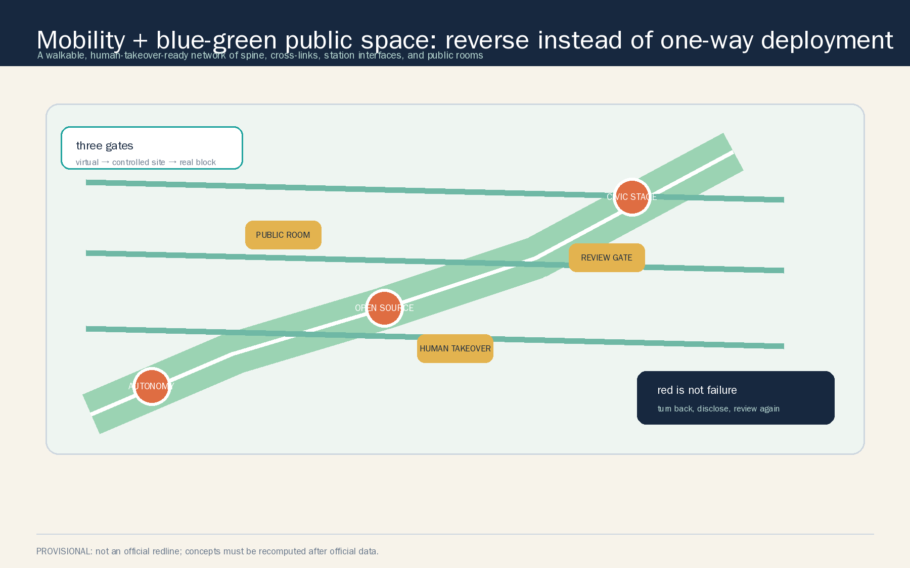
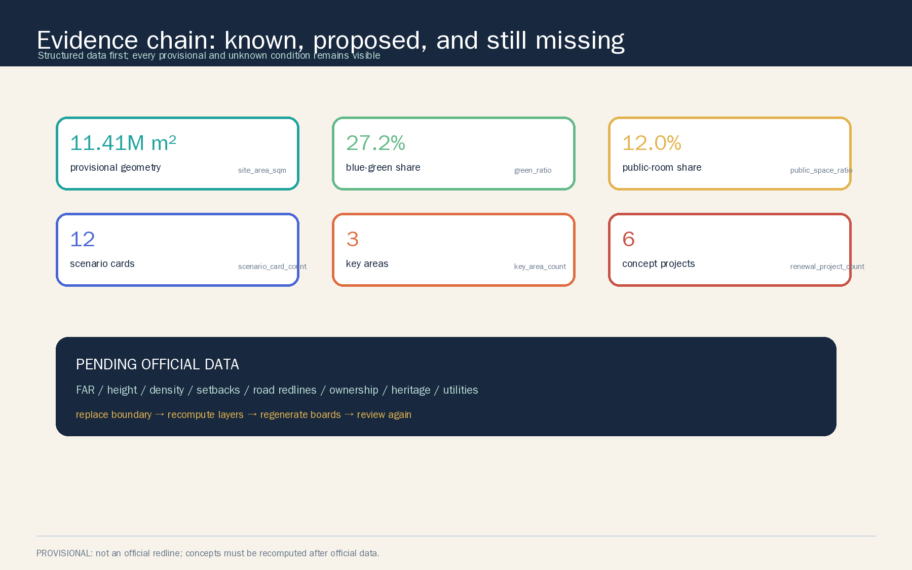

Coordinated research area
Approx. 43.6 km² in the announcement: ecosystem, three positions, five functions, three areas, two wings, and regional collaboration.
A reversible civic innovation spine connecting the Zhongzhiyuan test station, AI Origin open station, and Dazhongsi civic proof stage. The Zhongguancun service wing and Xiaoyuehe scenario wing return AI to everyday life.
The provisional boundary is deliberately quiet. The visual focus is the slow-mobility spine, three stations, public rooms, and two service wings.

Generated from the same geometry, metrics, and matrices; the constraint is for intake discussion only.
Strategy addresses ecosystem and regional collaboration; the overall area organizes renewal and infrastructure; the detailed areas verify differentiated station roles.
Approx. 43.6 km² in the announcement: ecosystem, three positions, five functions, three areas, two wings, and regional collaboration.
Approx. 11.4 km²: urban renewal, land use, transport, municipal support, heritage park vitality, and urban character.
Approx. 368.4 ha: Zhongzhiyuan, AI Origin Community, and Dazhongsi as test, open, and civic-proof stations.
The three areas are not identical AI parks. They form a reversible test, open, and civic-return loop.
Garden-like full-stack testing: Qinghe edge, laboratories, accelerator, safe governance sandbox, and low-carbon test.
Near-campus transfer: open release, co-translation learning, talent life, and public-service interfaces.
Urban intelligent economy: civic proof theatre, intelligent-native street, global pitch, and walking interface.

A complete shared-cut partition supports a service chain of research, blue-green space, civic culture, international service, and everyday life.

0802 AI full-stack research and test
1401 Jing-Zhang blue-green spine
0803 Civic culture and open learning
05 Industry service and global exchange
0702 Community service and talent life
Codes come from the repository subset. Specific uses, controls, and parcel limits remain pending.
The slow spine, cross-links, station interfaces, public rooms, and human takeover form a walkable, question-able, reviewable network.

Green is normal, yellow is a controlled pilot, and red returns to the previous stable state with a public reason. Issue #1119 is an attributed optional reference, not an official standard.
Roads are conceptual links, not redlines. Compute, energy, flood, fire, and cyber-safety capacity require specialist evidence.
Eight building interfaces and six concept project hooks are provided for professional selection. They are not demolition, ownership, investment, or construction conclusions.
Laboratory, accelerator, open learning, transfer, civic proof, intelligent-native street, public service, and technology service wing.
Concept footprint union: 577,221.597 m².
P0 Public spine, guidance, human-reversible pilots
P1 Three station interfaces, open operation, controlled tests
P2 Global events, industry network, regional collaboration
Every card needs authorization, minimum data, human review, stop conditions, and an exit path before a pilot.
Public release, contribution memory, human host.
Virtual, controlled-site, and real-block gates.
Public network and observation, no identity recognition.
Explain energy, water, and edge compute.
Research, IP, legal, and product co-translation.
Human-equivalent service and offline option.
Authorization, digital assets, and purpose audit.
Explainable education, health, legal referral.
Traceable sources, multilingual guidance, human interpretation.
Anonymous feedback, repair, appeal, and review.
Safety envelope, child protection, human takeover.
Heritage, open source, and industry verification.
Scenario cards: 12; industry test cards: 3.
Direct spatial readings, task-completeness readings, and pending official indicators are shown separately.

The announcement tasks, agent.1-agent.6, professional standards, and design depth are indexed in JSON matrices and explained in the narrative and boards.
Concept, ecosystem, AI+ scenarios, public space and landmarks, cultural narrative, global events, and long-term operation.
GeoJSON, metrics, sources, assumptions, compliance, standards, design depth, and self-check.
Chinese primary and independent English translation with offline reports, visual pages, A3/A0 boards, and paired text-bearing figures.
This is package-level self-check semantics, not official scoring, field performance, approval, selection, or construction.
Public, cleared, provisional, and community background sources are recorded with intended use and limitations.
Official announcement, agent taskbook, urban design measures, regulatory planning measures, and the land-use classification guide.
Mila, Vector, AI Singapore, The Alan Turing Institute, STATION F, and the attributed CC-BY-4.0 Switchback Protocol from Issue #1119.
Missing official polygons, controls, transport, ownership, buildings, heritage, municipal data, public-service baseline, and scenario baseline are not guessed.
Official boundary and key areas → land-use partition → building, road, blue-green, and public-space layers → metrics → five figures → report and bilingual boards → manifest → full self-check.